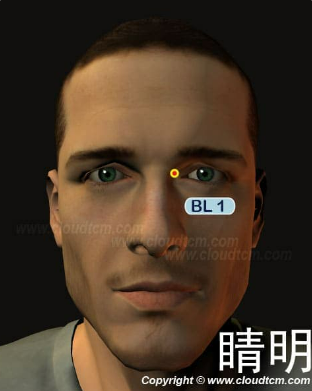

晴明穴

位置：
面部，目內眥角稍上方凹陷處，當上瞼部眼眶內側緣與眼球之間空隙部
按摩手法：
用拇指按揉晴明穴100~200次，每天堅持可緩解治療眼部~200次
穴道介紹：
膀胱經之血由此交於眼睛，本穴為太陽穴膀胱經之第一穴，按壓睛明穴能刺激膀胱經的氣血，使眼睛受到更多氣血的滋潤，經常按摩此穴位以解除眼睛疲勞，預防近視眼。
此穴還具有通鼻的作用，常按摩對鼻炎、鼻竇炎有保健作用。
穴名介紹：
- 「睛」，指穴所在部位及穴內氣血的主要作用對象為眼睛也。「明」，光明穴之意。睛明名意指眼睛接受膀胱經的氣血而變得光明穴。
- 「目內眥」，目內眥，乃言本穴所在的部位為目內框也。
- 「淚孔」、「淚空」、「淚腔」：淚，淚水也。孔，孔隙也。空、腔，空腔也。穴名之意指本穴外輸的膀胱經氣血為濕潤眼睛液體的重要來源，眼睛受之以液而能濕潤並轉動自如，故名“淚孔”、“淚空”、“淚腔”。
- 「目眥外」：目眥，指穴所在的部位為目框內角。外，指本穴氣血作用於眼睛之外。